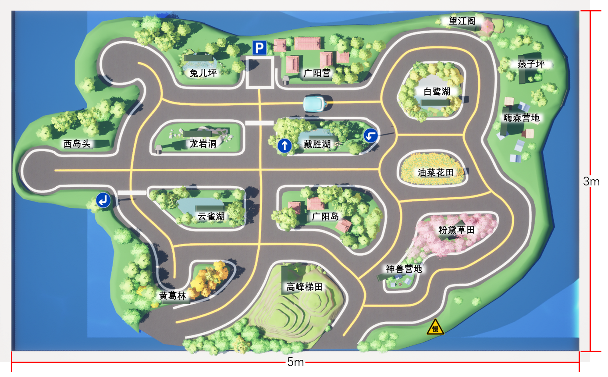

管理后台
管理参赛账号、比赛地图和正式提交记录。
用户管理
查看参赛账号并修改队伍和分组。
全部注册用户
正在读取用户
请稍候，系统正在汇总注册账号。
当前没有注册用户
新账号完成注册后会显示在这里。
用户列表暂时无法读取
请稍后重试。
| 用户名 | 队伍名 | 分组 | 角色 | 注册时间 | 操作 |
|---|
比赛地图
选择任务和地图编号后进行编辑。
正在读取当前已发布地图…
正在读取地图
请稍候，系统正在读取当前已发布配置。
地图配置暂时无法读取
请稍后重试。

查看队伍地图分配
同一队伍的所有账号在同一任务中始终使用同一套地图；刷新、重新登录或换同队账号都不会换图。
暂时没有参赛队伍
有普通用户注册队伍后会显示在这里。
| 队伍 | 账号 | 任务1 | 任务2 | 任务3 |
|---|
SEASON SCREENING RANKING
筛选五局排名
每个账号本赛季仅 1 次，一账号一行。关闭、过期、异常或缺局均按 0 分计入；完全相同的排名指标并列。
筛选五局排名表
正在读取筛选排名
请稍候。
筛选排名服务正在准备
接入后将按服务端冻结顺序显示；筛选只缩小结果，不会在浏览器中重排名。
当前没有筛选结果
账号完成或结算唯一一次筛选五局后，会按一账号一行显示。
筛选排名暂时无法读取
请稍后重试。
| 名次 | 用户 | 总分 / 100 | 完成局 / 5 | 有效局 / 5 | 最低分 / 100 | 碰撞 | 越界 | 异常局 |
|---|
正式提交记录
查看已提交并完成校验的比赛记录。
全部比赛记录
正在汇总全部记录
请稍候，系统正在读取本地比赛存档。
当前没有提交记录
参赛账户提交比赛存档后，记录会显示在这里。
全部记录暂时无法读取
请稍后重试。
| 用户名 | 队伍名 | 分组 | 运行方式 | 能力标记 | 任务 / 记录 | 得分 / 100 | 校验状态 | 提交时间 | 操作 |
|---|
各队三项最高分
按注册队伍汇总正式提交记录，同队同任务仅保留最高分。
每页 15 支队伍
正在核对队伍和正式提交记录…
队伍成绩暂时无法汇总，请稍后重试。
| 队伍 | 小组 | 任务1最高分 | 任务2最高分 | 任务3最高分 | 三项总分 |
|---|